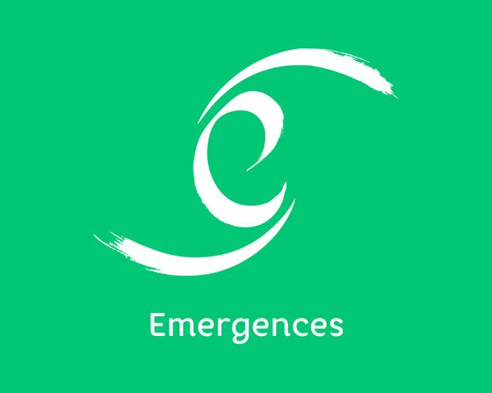

Qui suis-je
Votre alliée pour un parcours de soins apaisé
Manipulatrice en imagerie médicale (scanner et IRM) depuis 25 ans, je suis passionnée par mon métier et profondément engagée dans le bien-être de mes patients. Chaque jour, j'ai à cœur de les accompagner avec douceur et empathie, pour transformer des moments parfois difficiles en expériences plus sereines.
Ma rencontre avec l'hypnose en 2015, lors d'un congrès, a été une véritable révélation. Elle a changé ma perception du monde médical et enrichi ma pratique quotidienne. J'ai découvert qu'à travers la communication thérapeutique, il est possible d'offrir aux patients un immense réconfort : aider à transformer leurs peurs, leurs appréhensions, et même leur perception de la douleur, pour qu'ils abordent chaque étape avec plus de confiance et de sérénité.

Un parcours de formation solide et une expertise reconnue
Portée par cette découverte, j'ai suivi un cursus complet en hypnose Ericksonienne auprès de l'Institut Emergences à Rennes, durant 3 ans. Ce cheminement m'a permis d'acquérir des outils pratiques et une expertise solide pour intégrer l'hypnose dans ma pratique professionnelle.
Convaincue de l'importance de partager ces bienfaits, j'ai animé plusieurs conférences comme :
L’hypnose: une force personnelle et professionnelle
L'hypnose n'est pas qu'un outil pour mes patients : elle est devenue une ressource précieuse dans ma propre vie. Lorsque j'ai dû moi-même affronter une intervention chirurgicale importante, une hystérectomie avec péridurale, j'ai utilisé l'auto-hypnose pour me préparer physiquement et mentalement.
En travaillant sur moi comme je le fais pour mes patients, j'ai adapté les outils à mes besoins personnels, ce qui m'a permis :
- D'aller sereinement à l'intervention
- De gérer efficacement la douleur
- Et de récupérer rapidement, tant physiquement qu'émotionnellement.
Cette expérience m'a profondément marquée. Elle m'a permis de comprendre ce que ressent une personne lorsqu'elle devient patient. Ce vécu renforce aujourd'hui ma capacité à accompagner chacun avec authenticité et bienveillance.
Un accompagnement adapté à chacun
Depuis près de 10 ans, j'utilise l'hypnose pour accompagner mes patients dans des contextes variés, comme :
- Surmonter leurs peurs
- Mieux gérer la douleur ou le stress
- Ou encore traverser une chirurgie, une IRM ou un soin difficile.
- Apporter du confort au quotidien
L'hypnose ne remplace pas les médicaments, mais elle est un complément précieux. Elle aide à mieux tolérer les événements, à se sentir acteur de son parcours de soins, et à vivre ces moments avec plus de sérénité.

Mon engagement: vous écouter et vous accompagner avec douceur
Douce, à l'écoute, et toujours attentive à ce que vous traversez, je mets mon expertise à votre service. Ensemble, nous explorons les outils les mieux adaptés à votre situation, des ressources que vous pourrez vous approprier et utiliser à votre façon.
Car c'est vous qui faites le chemin, je suis simplement là pour vous accompagner, à votre rythme.
J'exerce l'hypnose en complément du suivi médical, sans me substituer aux professionnels de santé qui vous accompagnent.